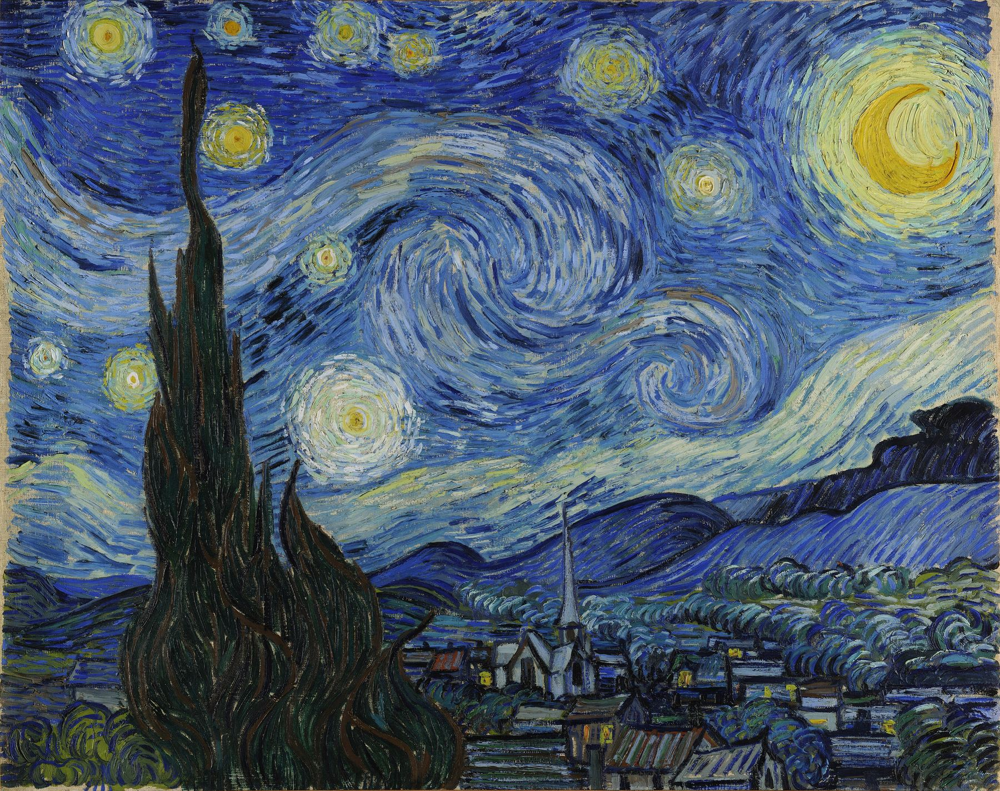
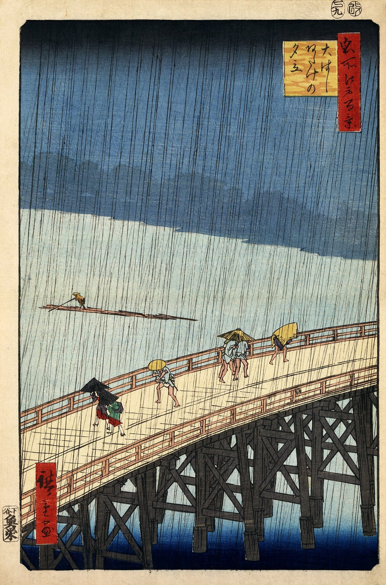

Van Gogh: Starry Night
~11,889 after the ice, or 1889.
Look at the big star

You can zoom this image to see it in detail. Once you've zoomed in, you can drag it to see any part you are curious about. You can also tap it to see a magnifier, which you can also drag.
Tap anywhere on the picture.
If you tap the bright star, to the right of the tallest tree, a magnifier will appear and you can see it in detail.
The thing to know about that star is this: it isn't a star at all. It is the planet Venus, and in June of 1889 it came up in the east about two hours before the sun did. Anyone awake could see it.
Vincent van Gogh was awake.
The window
He was living in an asylum at Saint-Rémy, in southern France, in an upstairs room with a barred window facing east. He had gone there himself.
Three weeks before he went in he wrote to his brother Theo to explain why. He could not face taking a studio and living in it alone. He was afraid of losing the ability to work, which had only just come back to him. And:
I wish to remain confined, as much for my own tranquillity as for that of others.
Vincent to Theo, 21 April 1889
He had spells when he lost hold of things — days he could not account for afterwards and could not see coming. They frightened him. Between them he was himself and he wanted to work. The asylum agreed to it and gave him a second room downstairs to paint in. He stayed a year.
In the first days of June he wrote to Theo again.
This morning I saw the countryside from my window a long time before sunrise with nothing but the morning star, which looked very big.
Vincent to Theo, early June 1889
He painted this about two weeks later.
What was out there
The sky was out there, and the sky is the part that can be checked. Venus was where he put it. The one thing in the sky he changed is the moon: that June it was fat and lopsided, past full, and he painted a thin one.
The tree was out there, though not the way it is here. Cypresses grew in the fields beyond the wall. In the painting one of them stands closer to you than anything else and runs straight off the top of the canvas, taller than the mountains behind it. Whether a cypress really stood in that spot, nobody knows.
The village was not out there at all. There is no village in that view. And the church has a tall thin spire of a kind you find in Holland and not in southern France. He had been gone from Holland four years by then, and he never went back.
What the sky is made of
Tap Sample colours, then tap anywhere in the picture.
The deep blue between the stars is ultramarine. If you have read about the girl with the pearl earring, that is the same blue — and Vermeer's came out of a mountain in Afghanistan, travelled for a year on the backs of animals, and was worth more than its weight in gold.
Van Gogh's came out of a tube. In 1828 a French chemist named Jean-Baptiste Guimet worked out how to make that exact colour in an oven, out of china clay, soda, sulphur and charcoal. He won a prize for it. Six years later he was making it by the barrel in a factory on a river north of Lyon. The most expensive colour in the world became one of the cheap ones, which is why the sky in this painting can be laid on half a centimetre thick.
The brighter blue in the swirls, and the ring around the moon, is a different blue: cobalt. The two are close. Sample one and then the other and the tool will hedge, because in places the difference is too small to call.
The moon and the stars are yellow, and there is more than one yellow in them. One is zinc yellow. Another appears to be indian yellow, which has the strangest story of any colour here. It was said to be made in Bengal, from the urine of cows fed on nothing but mango leaves. That was written down once, in 1883, by a man who said he had been to see it done. Nobody has confirmed it since. Nobody has disproved it either.
There is a little green around the moon, and it is emerald green, which is made with arsenic.
And the cypress. The brown of the branches is burnt umber. The dark green over it is probably Prussian blue mixed with a yellow — probably, because even the people who have measured it will not say for certain. If it is, then the darkest thing in this painting was made with the same blue as the great wave, fifty-eight years earlier and nearly ten thousand kilometres away.
Afterwards
He did not think much of it.
In September he made a list of the paintings he was sending to Theo and left this one off, to save the postage. He called it a night study. In November he wrote to his friend Émile Bernard that he had let himself go again, "reaching for stars that are too big — another failure."
He died the following July. Theo died six months after that, and everything came to Theo's widow, Johanna.
Then the painting went travelling. Amsterdam for ten years. Paris, for two months, with a man who swapped it away. Paris again. Back to Amsterdam, because Johanna bought it back. Then a house in Rotterdam, where it stayed for thirty-two years. Then Paris once more, with a dealer who got out of France ahead of the Germans. In 1941 it crossed the Atlantic for good.
It is in New York now, and people queue to stand in front of it.
More
Johanna. Theo married Johanna Bonger in April 1889, the month before Vincent went into the asylum. They had a son the following January and named him Vincent. Vincent the painter died that July. Theo died the January after that, aged thirty-three. Johanna was twenty-eight, with a baby, about two hundred paintings nobody wanted, and seven hundred letters.
She could have sold the lot cheap and been done with it. Instead she learned the trade. She lent paintings to exhibitions, argued with dealers, sold slowly and turned down the wrong offers, and spent years reading the letters in order and copying them out. She published them in 1914. The reason you can read what Vincent wrote to his brother about the morning star is that his brother's widow sat down and did the work.
She died in 1925. Her son — Vincent, the baby — became an engineer, and kept the collection together for another forty years. He gave it to a foundation in 1962, and in 1973 it opened as a museum in Amsterdam, where most of it is today.
Theo. Four years younger than Vincent, and an art dealer in Paris. He sent his brother money nearly every month for ten years and never saw a return on it. Almost every letter we have is one Vincent wrote to Theo, because Theo kept them.
The asylum. Saint-Paul-de-Mausole was a monastery nine hundred years ago and an asylum from 1807. It is still a psychiatric hospital. His room is kept the way it was, and you can stand at the window and look east.
Japan. Two years before this painting, in Paris, Vincent and Theo bought Japanese prints by the hundred, cheap, from a dealer's back room. Vincent hung them on the walls and put on an exhibition of them in a café. He also copied three of them in oil paint. Two were prints by Hiroshige that he owned. The third he traced off the cover of a French magazine and painted much larger than the original. When he moved south to Arles he told Theo the countryside there reminded him of Japan.

Vincent van Gogh’s World
References
The Museum of Modern Art, New York, The Starry Night, 472.1941. The catalogue entry, the credit line and the provenance — every owner between Theo van Gogh and the museum.
Van Gogh Museum and Huygens Institute, Vincent van Gogh — The Letters, vangoghletters.org. Letter 760, to Theo, Arles, 21 April 1889; letter 777, to Theo, Saint-Rémy, early June 1889; and the letter to Émile Bernard of late November 1889. The two quotations are from that edition.
ColourLex, "Van Gogh, The Starry Night", on the pigment maps made from multispectral imaging by the Rochester Institute of Technology and MoMA. The paints named in the tool come from that work.
Van Gogh Museum, on Johanna van Gogh-Bonger and how the family collection became a museum.
The painting is the Google Art Project photograph as published on Wikimedia Commons, public domain. The two prints he copied and his two copies of them are the Van Gogh Museum's and the Rijksmuseum's photographs, also public domain: Hiroshige's Sudden Shower over Shin-Ōhashi Bridge and Atake and Plum Park in Kameido, both 1857, from One Hundred Famous Views of Edo; and Van Gogh's Bridge in the Rain (s0114V1962) and Flowering Plum Orchard (s0115V1962), both 1887.